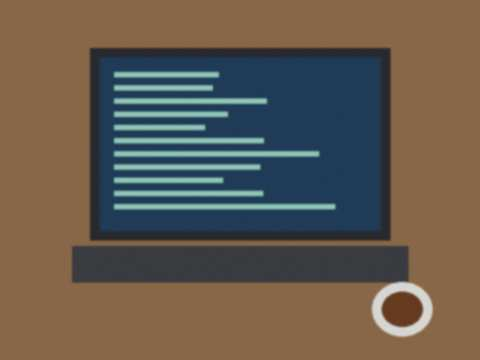
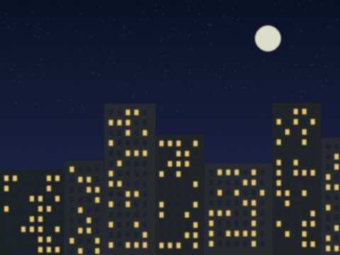
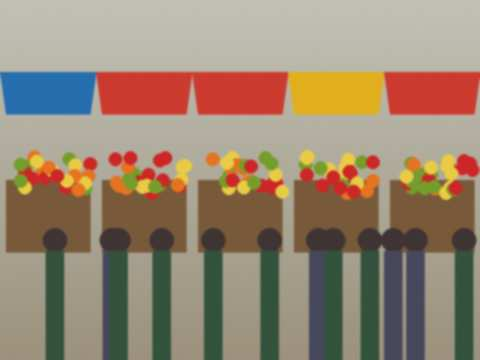

Saturday, March 30th, 2019 · 6:00 pm
The team captains have a group on the new chat app, Tulpar. So much easier than the paper sheet at the shop. We decided the whole schedule of the next season in one evening: a captain wrote "can we play on Sunday?", 23 people said yes, 2 people said "why are we talking at 3 a.m.".
The paper sheet stays on the counter. Not everyone has a smartphone. Not everyone wants one.
Saturday, December 8th, 2018 · 10:30 pm

The new bracket with names in two colours of marker. Red is for the winners of the previous seasons. The wall is almost full of history.Season 6. 24 teams, 3 divisions. I made a spreadsheet to decide the groups and it took me 4 evenings. Nobody noticed except Madina, who said "you made a government".
Tuesday, June 5th, 2018 · 9:10 pm
Dilshat-aka raised the hourly price from 4 to 5 som. He told us himself, in the shop, with a cup of tea in his hand. The electricity bill is higher and the computers need new fans. He said "league nights stay at the old price for the teams", and he never explained the math. Some people complained. I thought: for 5 years this man has given us his wall, his marker and his power.
Saturday, February 24th, 2018 · 11:30 pm
Final: Temir-Kapka 5 vs the Lagers. 15 years of Old City hate, played out on nuke.

The back room on final night. The technician is on the chair with the router, upper left.The room was so full that the technician stood on a chair holding the router. The Lagers lost, they said it was lag. Everybody said "lagers with lag". The captain of the Lagers laughed. A good sign.
I think the real winner is the room, because 60 people came and nobody had a fight.
Saturday, December 9th, 2017 · 10:00 pm

Next to the club is the Misgaron row. Every year the guys make the cup a new base. This year's base is a piece of an old samovar.Because nobody asked, I will tell you: all the matches, all the results of five seasons are in a notebook with a green cover. 11,314 rounds. Yes I counted. No, it was not hard.
The league is growing, and the room is not. Dilshat-aka is thinking about a second room, but the neighbour is a barber who says "no noise after 21:00", and a barber has a big influence in the Old City.